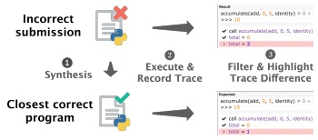

Elena L. Glassman, MIT PhD EECS
Postdoctoral Scholar, UC Berkeley
Fellow, Berkeley Institute of Data Science


Postdoctoral Scholar, UC Berkeley
Fellow, Berkeley Institute of Data Science

(Sortable) Papers
| Figure | Year | Venue | Title | Context | Humans in the loop | Technology | Authors | Organization | Field | Awards |
|---|---|---|---|---|---|---|---|---|---|---|
 |
2017 | ACM Learning @ Scale (L@S) | Writing Reusable Code Feedback at Scale with Mixed-Initiative Program Synthesis | Massive Programming Classrooms | Teachers
|
Program synthesis by example | Head, Glassman, Soares, Suzuki, Figueredo, D'Antoni and Hartmann | UC Berkeley, UW Madison, UFCG, UC Boulder | Human-computer interaction (HCI) | |
 |
2005 | IEEE Transactions on Biomedical Engineering (TBME) | A wavelet-like filter based on neuron action potentials for analysis of human scalp electroencephalographs | Brain-Computer Interfaces (BCI) | EEG-based BCI users may experience more quick, accurate responses from the computer using this custom-designed wavelet. | Wavelet analysis | Glassman | Central Bucks West HS, Princeton U | Signal processing | Intel Young Scientist Award (ISEF 2005 top prize) |
|  | 2017 | IEEE Visual Languages and Human-Centric Computing (VL/HCC) | TraceDiff: Debugging Unexpected Code Behavior Using Trace Divergences | Massive Programming Classrooms | Students can get personalized display how their program deviates in behavior from the closest solution that passes all the teacher's tests. | Program synthesis | Suzuki, Soares, Head, Glassman, Reis, Mongiovi, D'Antoni, Hartmann | UC Boulder, UC Berkeley, UW Madison, UFCG | Human-Computer Interaction |